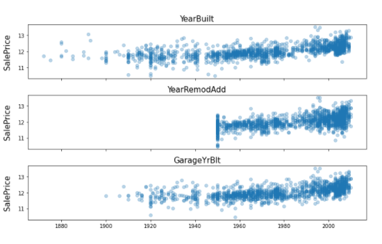
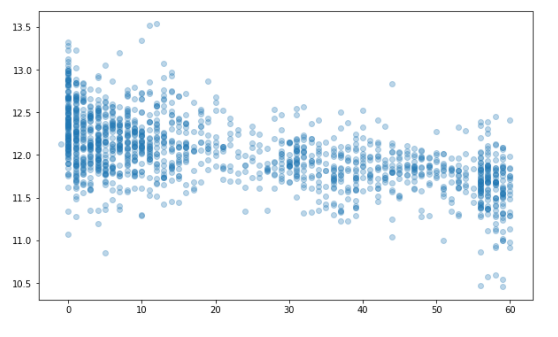
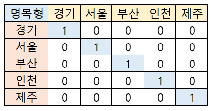
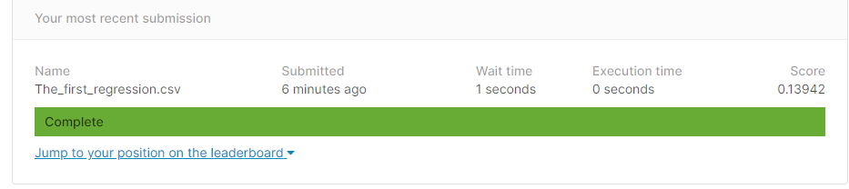

House_price prediction Practice 01
Kaggle 주택가격 예측
Kaggle house oruces advabced regression
1 | # This Python 3 environment comes with many helpful analytics libraries installed |
데이터 다운로드 및 불러오기
1 | import pandas as pd |
EDA
- 이상치과 중복값 제거
- overallQual (주택의 상태를 1~10등급으로 책정)
- 평점 1 : 판매가가 높음 = 이상치라고 판단 할 수 있따. : 이걸 제거 해 줘야 함.
1 | train.info() |
1 | train.drop(train[(train['OverallQual'] < 5) & (train['SalePrice']> 200000)].index, inplace = True) |
종속변수 시각화
1 | import seaborn as sns |
1 | import numpy as np |
data feature 제거
- 모형 학습 시간 감소
- 연산 시 noise 감소
그래서 : train ID 를 빼주기로함
1 | train_ID = train['Id'] |
1 | # y 값 추출, dataset 분리할때 사용 |
1 | # data 합치기 |
결측치 확인
- 결측치 처리
- 제거하기 : column 제거, 특정 행만 제거하기
- 채우기 : 1) numeric(수치형) : 평균 또는 중간값으로 채우기
2) String(문자형) : 최빈값으로 채우기 - 통계 기법이용, 채우기 (data 보간)
- 실무에서는 (KNNImput)등, 시계열 자료 or 산업군에 따라 다르므로 가서 배워라.
1 | #결측치 확인 |
1 | all_df.drop(['PoolQC', 'MiscFeature', 'Alley', 'Fence', 'FireplaceQu', 'LotFrontage'], axis=1, inplace=True) |
채우기
1. 문자열 채우기
2.
- object column 추출
1 | #a = all_df['BsmtCond'].value_counts().mode() #mode() : 최빈값 가장 빈도수가 높은 값 찾기 |
1 | import numpy as np |
1 | all_df.info() |
왜도(Skewnewss) 처리하기 : 정규 분포를 이룰 수 있게 (설문조사 논문 통계의 경우 -1< 외도 <1)
boxcose를 사용 할 예정
왜도가 양수일때, 음수일때 (좌, 우로 치우친 정도)
첨도가 양수일때, 음수일때 (뽀족한 정도)
RMSE를 최적(낮게)으로 만들기 위해 조정.
1 | from scipy.stats import skew |
1 | skewnewss_index = list(skewness_features.index) |
1 | from scipy.special import boxcox1p |
1 | fig, ax = plt.subplots(figsize=(10, 6)) |
도출 변수
Feature Engineering 의 Key step
- 판매량, 단가, 매출액 X
- 판매량 X 단가 = 매출액(New Value) : 도출 변수
- ML은 수식이기 때문에 도출변수가 생성 되는것은 연산의 증가로 이어진다.
- 시간이 오래 걸린다.
- 결론 : 변수를 줄이는 것이 좋다.
1 | #집의 층수 를 더해서 전체면적이라는 변수를 도출 |
1 | all_df['Total_Bathrooms'] = (all_df['FullBath'] + (0.5 * all_df['HalfBath']) + all_df['BsmtFullBath'] + (0.5 * all_df['BsmtHalfBath'])) |
- 따라서 data 정의서 먼저 봐야 한다. : data description.txt를 먼저 봐야 한다. !!! (실무에서는 없는 경우가 많다.)
- 시각화 : 각각의 data 무한작업, 도메인 공부
1 | # 연도와 관련된. |
1 | fig, ax = plt.subplots(3, 1, figsize=(10, 6), sharex=True, sharey=True) |

1 | all_df = all_df.drop(['YearBuilt', 'GarageYrBlt'], axis=1) |
1 | # 리모델링 시점으로 부터 얼마나 되었나 + 팔리는거 |

1 | all_df['YearsSinceRemodel'] = all_df['YrSold'].astype(int) - all_df['YearRemodAdd'].astype(int) |
더미변수
String data (non-Numeric)
- 명목형 : 남학생, 여학생…
- 서열형(순서) : 1등급, 2등급, 3등급 (가중치, 등급숫자 등으로 바꿀 수 있다. )

- 세부적으로 customize 하는 것이 낫다.
- 명목형 series에 따라 17개의 model을 개별적으로 만들되, 하나의 모델처럼 보이게 시각화 대시보드로 만들어 줘야 합니다.
1 | all_df['PoolArea'].value_counts() |
1 | # 0과 1로 나누어 적용 |
1 | all_df['PoolArea'] = all_df['PoolArea'].apply(count_dummy) |
1 | all_df['GarageArea'] = all_df['GarageArea'].apply(count_dummy) |
1 | all_df['Fireplaces'] = all_df['Fireplaces'].apply(count_dummy) |
Label Encoding, Ordinal Encoding, One-Hot Encoding
- Label Encoding : 종속변수에만
- Ordinal Encoding : 독립변수에만
- 써야 하지만, 개념은 같다.
- One-Hot Encoding :
1 | from sklearn.preprocessing import LabelEncoder |
1 | from sklearn.preprocessing import OrdinalEncoder |
1 | # import pandas as pd |
1 | import pandas as pd |
1 | all_df = pd.get_dummies(all_df).reset_index(drop=True) |
머신러닝 모형 학습 및 평가
데이터셋 분리 및 교차 검증
1 | X = all_df.iloc[:len(y), :] |
1 | from sklearn.model_selection import train_test_split |
평가지표
MAE
1 | import numpy as np |
1 | import numpy as np |
RMSE
1 | import numpy as np |
Test1
1 | y_true = [400, 300, 800] |
Test2
1 | y_true = [400, 300, 800, 900] |
RMSE with Sklean
1 | from sklearn.metrics import mean_squared_error |
모형 정의 및 검증 평가
1 | from sklearn.metrics import mean_squared_error |
1 | score = cv_rmse(lr_model, n_folds) |
첫번째 최종 예측 값 제출
1 | from sklearn.model_selection import cross_val_predict |
1 | submission = pd.read_csv("sample_submission.csv") |
모형 알고리즘 추가
1 | from sklearn.ensemble import RandomForestRegressor, GradientBoostingRegressor |
1 | score = cv_rmse(lr_model, n_folds) |
1 | score = cv_rmse(tree_model, n_folds) |
1 | score = cv_rmse(rf_model, n_folds) |
1 | score = cv_rmse(gbr_model, n_folds) |
1 | fig, ax = plt.subplots(figsize=(10, 6)) |
- RMSE 가 적은 것이 좋다. : 예측이 잘 된 Model이라고 할 수 있다.
1 | lr_model_fit = lr_model.fit(X, y) |
1 | blended_score = rmsle(y, blended_learning_predictions(X)) |
1 | fig, ax = plt.subplots(figsize=(10, 6)) |
1 | submission.iloc[:,1] = np.floor(np.expm1(blended_learning_predictions(X_test))) |
